초음파비파괴검사기사 (2021-03-07 기출문제)
1과목: 비파괴검사 개론
1. 400℃이상의 온도에서 일정 하중조건하에서 장시간 사용 했던 재료에 발생하는 파괴로, 일반적으로 모재에 많이 발생하는 균열은?
- 열간균열
- 피로균열
- 응력부식균열
- 크리프균열
(정답률: 65%)

2. 다음 중 다른 비파괴검사방법에 비해 초음파탐상검사 방법의 장점을 설명한 것은?
- 초음파탐상검사는 방사선투과검사에 비해 균열 등 미세한 결함에 대해 감도가 높다.
- 다른 비파괴검사에 비해 빔에 평행한 방향의 결함은 쉽게 검출되지만 금속의 결정립 크기에 영향을 받기 쉽다.
- 다른 비파괴검사에 비해 검사자의 많은 지식과 경험이 요구된다.
- 다른 비파괴검사에 비해 주로 탐촉자와 시험체간의 직접 접촉에 의하여 감도가 크게 변한다.
(정답률: 69%)
3. 방사선투과시험에서 현상액의 온도가 규격에 화씨(°F)로 되어 있어 섭씨온도로 변환시켜 측정된 값과 비교하고자 한다. 다음 중 화씨온도(°F)를 섭씨온도(℃)로 변환하는 식으로 옳은 것은?
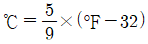
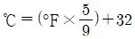
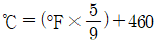
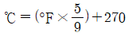
(정답률: 60%)
4. 다음 중 레이저(laser)가 필요한 비파괴검사법은?
- 입체 방사선투과검사(Stereo radiography)
- 자속누설검사(Magnetic flux leakage test)
- 스펙클 간섭법(Speckle interferometry)
- 광섬유 보아 스코프(Fiber optic borescope)
(정답률: 34%)
5. 다음 중 와전류탐상시험법으로 검사할 수 없는 재료는?
- 동관(Copper tube)
- 알루미늄 합금
- PVC 파이프
- 텅스텐 와이어
(정답률: 70%)
6. 피로강도를 증가시키는 방법으로 옳은 것은?
- 표면 거칠기를 증가시킨다.
- 표면층의 강도를 감소시킨다.
- 가능한 한 노치를 많게 한다.
- 표면에 쇼트 피닝 처리를 한다.
(정답률: 60%)
7. 순수한 마그네슘을 액체 상태로부터 상온까지 서서히 냉각시키면서 시간에 따른 온도변화를 측정한 그래프가 다음과 같을 때, To가 의미하는 것은?
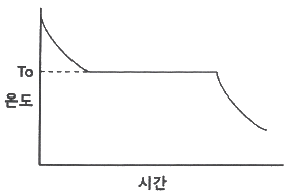
- 마그네슘의 비등점
- 마그네슘의 응고점
- 마그네슘의 액화점
- 마그네슘의 자기변태점
(정답률: 65%)
8. 일정한 지름의 강철 볼을 일정한 하중으로 시험편 표면에 압입한 다음, 하중을 제거한 후에 볼 자국의 표면적으로 하중을 나눈 경도값을 HBS 또는 HBW로 표기하는 경도기는?
- 브리넬 경도기
- 로크웰 경도기
- 쇼어 경도기
- 비커즈 경도기
(정답률: 52%)
9. 주철에서 흑연화를 방해하는 원소는?
- Cr
- Si
- Ni
- Co
(정답률: 38%)
10. 강에 포함되어 적열취성의 원인이 되는 성분은?
- Cu
- S
- P
- H
(정답률: 62%)
11. 다음 중 Mg의 특성을 설명한 것으로 틀린 것은?
- 융점은 약 1107℃이다.
- 비강도가 커서 항공우주용 재료로 사용된다.
- 감쇠능이 주철보다 커서 소음방지 구조재로서 우수하다.
- 상온에서 100℃까지는 장시간에 노출되어도 치수의 변화가 거의 없다.
(정답률: 62%)
12. 강 중의 잔류 오스테나이트를 마텐자이트로 변태시킬 목적의 열처리는?
- 템퍼링 처리
- 마템퍼링 처리
- 서브제로 처리
- 오스템퍼링 처리
(정답률: 50%)
13. 고속도공구강인 SKH51의 주요 합금 첨가원소로 옳은 것은?
- Co – Be – W - Cr
- N – Cr – Ni - Co
- W – Cr- Mo - V
- Co – Ni – W – Sn
(정답률: 55%)
14. 알루미늄의 일반적인 성질이 아닌 것은?
- 가공성이 좋다.
- 가볍고 내식성이 있다.
- 순도가 높을수록 연질이 된다.
- 알루미늄 내 Cu는 도전율을 향상시킨다.
(정답률: 59%)
15. 합금의 조직 미세화 처리 목적으로 용융금속에 금속 나트륨을 첨가한 합금계는?
- Cu – Zn 계
- Cu - Ni 계
- Al - Si 계
- Zn – Al - Cu 계
(정답률: 61%)
16. 다음 중 피복제의 역할로 틀린 것은?
- 아크를 안정시킨다.
- 용착금속을 보호한다.
- 용착금속의 냉각속도를 빠르게 한다.
- 용착금속에 필요한 합금원소를 첨가시킨다.
(정답률: 47%)
17. 용접 중에 아크를 중단시키면 중단된 부분이 오목하거나 납작하게 파진 모습으로 남는 것은?
- 기공
- 엔드 탭
- 선상조직
- 크레이터
(정답률: 58%)
18. 볼트나 환봉 등을 강판이나 형강 등에 직접 용접하는 방법으로 모재와 볼트 사이에 순간적으로 아크를 발생시키는 용접방법은?
- 스터드 용접
- 테르밋 용접
- 서브머지드 아크 용접
- 가스 텅스텐 아크 용접
(정답률: 42%)
19. 강의 용착 금속 결함 중 은점(Fish eye) 발생의 가장 큰 원인이 되는 가스는?
- 질소
- 수소
- 헬륨
- 이산화탄소
(정답률: 65%)
20. 피복 아크 용접에서 아크전압이 20V, 아크전류는 150A, 용접속도가 15cm/min 일 때 용접 입열은 몇 Joule/cm 이낙?
- 120
- 750
- 12000
- 75000
(정답률: 62%)
2과목: 초음파탐상검사 원리
21. 1.6X0 이상의 영역에서 초음파의 전파거리에 따른 음압의 변화에 대한 설명으로 옳은 것은? (단, X0는 근거리음장거리이다.)
- 파장의 제곱에 비례하고 진동자의 단면적에 반비례한다.
- 파장에 비례하고 진동자의 단면적의 제곱에 반비례한다.
- 진동자의 단면적에 비례하고 파장과 거리의 곱에 반비례한다.
- 진동자의 직경에 비례하고 파장과 거리의 제곱에 반비례한다.
(정답률: 50%)
22. 음향 임피던스가 서로 다른 두 재질의 경계면에 초음파를 입사시켰을 경우 나타나는 현상으로 옳은 것은?
- 모두 굴절된다.
- 입사한 초음파는 모두 흡수한다.
- 입사한 초음파는 모두 반사한다.
- 일부는 투과하고 일부는 반사한다.
(정답률: 56%)
23. 결정립의 크기와 초음파의 파장이 거의 같을 경우 발생되는 산란의 종류는?
- Rayleigh 산란
- Stochastic 산란
- 확산 산란
- 접촉 산란
(정답률: 60%)
24. 근거리 음장 한계거리를 가장 작게하는 방법은?
- 진동자의 직경을 작게 하고 주파수를 낮게 한다.
- 진동자의 직경을 크게 하고 주파수를 높게 한다.
- 진동자의 직경을 작게 하고 주파수를 높게 한다.
- 진동자의 직경을 크게 하고 주파수를 낮게 한다.
(정답률: 35%)
25. 다음 중 음향임피던스를 나타내는 식으로 옳은 것은?
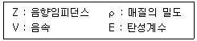
- Z = ρ⦁E
- Z = ρ⦁V
- Z = ρ/E
- Z = ρ/V
(정답률: 67%)
26. 다음 측정범위의 조정결과 중 시험편 두께가 다른 것은?
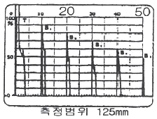
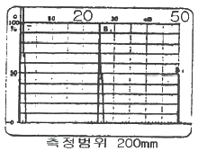
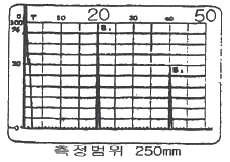
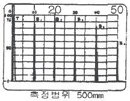
(정답률: 68%)
27. 초음파탐상검사에서 접촉매질의 사용 목적이 아닌 것은?
- 탐촉자와 시험체 사이의 공기 제거
- 탐촉자와 시험체 음향 임피던스 조화
- 음향 전달 효율 향상
- 시험속도 증가
(정답률: 64%)
28. 피검체의 표면 거칠기는 감도와 분해능 저하의 주요 원인이 된다. 이에 대한 설명으로 틀린 것은?
- 표면 거칠기로 인해 탐촉자의 송신펄스가 길어져 근거리음장 영역이 짧아지는 현상이 발생한다.
- 표면을 매끈하게 하거나 탐상기의 게인을 높임으로서 감도와 분해능 저하를 줄일 수 있다.
- 표면 거칠기로 인해 피검체 표면에서의 굴절과 저면에서의 난반사로 인한 산란으로 감도가 떨어진다.
- 감도와 분해능 저하를 막기 위해 탐촉자는 저주파수를 사용하거나 초음파 출력이 높은 것을 사용한다.
(정답률: 31%)
29. 경사각 탐촉자를 사용할 때 매질 1에서 매질 2로 초음파가 입사할 때 입사각이 제 2임계각보다 크게 되면 매질 2 내에는 어떤 파가 존재하는가?
- 종파만 존재한다.
- 횡파만 존재한다.
- 종파와 횡파가 함께 존재한다.
- 종파와 횡파 모두 존재하지 않는다.
(정답률: 48%)
30. 입자의 크기와 일정한 초음파 파장의 관계 중 가장 산란의 영향이 적은 경우는?
- 입자 크기가 파장의 1배
- 입자 크기가 파장의 0.5배
- 입자 크기가 파장의 0.1배
- 입자 크기가 파장의 0.01배
(정답률: 47%)
31. 접촉매질(couplant)에 관한 설명으로 틀린 것은?
- 일반적으로 사용되는 접촉매질로는 글리세린, 물, 기름, 그리스 등이 있다.
- 접촉매질은 피검체와 상호 화학작용이 일어나지 않는 것을 사용하여야 한다.
- 접촉매질은 탐촉자와 탐상표면 사이의 화학반응이 없어야 한다.
- 접촉매질은 피검체와의 음향임피던스 차이를 크게 하여 전달이 용이하게 한다.
(정답률: 64%)
32. 수침법에서 근거리 음장(near zone)을 줄이기 위해 가장 좋은 방법은?
- 주파수를 높인다.
- 물거리를 늘린다.
- 탐촉자의 직경이 큰 것을 사용한다.
- 물거리를 줄인다.
(정답률: 55%)
33. 기계 가공한 단조품의 평행부분을 수침법으로 탐상할대 결함 지시 없이 부분적으로 저면에코가 낮아졌다. 다음 중 가장 가능성이 높은 경우는?
- 조대한 결정립
- 작은 가늘고 긴 결함
- 큰 비금속 개재물
- 탐상면에 경사진 균열
(정답률: 36%)
34. 수직탐상에서 초음파의 지향각 때문에 음파가 저면에 닿기 전에 시험체의 옆면에서 반사되면 어떤 현상이 생기는가?
- 중복 전면 반사가 생긴다.
- 중복 저면 반사가 생긴다.
- 전면 반사지시가 작아진다.
- 파의 모드(Mode)가 변화될 수 있다.
(정답률: 57%)
35. 초음파탐상검사에 대한 설명으로 옳은 것은?
- 강판의 라미네이션 탐상에는 주로 경사각탐상이 이용된다.
- 강의 맞대기 용접부 탐상에는 주로 수직탐상이 이용된다.
- 모서리 이음이나 T이음 등의 용접부에서 수직탐상이 유효한 경우에는 그것을 병용한다.
- 차축의 탐상에는 수직탐상과 두께측정기를 반드시 병용한다.
(정답률: 55%)
36. 원거리 음장에서 빔의 분산각은 무엇에 의해 결정되는가?
- 초음파 탐상장치의 크기에 좌우된다.
- 진동자 직경에 반비례하고, 초음파 파장에 비례한다.
- 진동자 직경에 비례하고, 초음파 파장에 반비례한다.
- 진동자 직경과 초음파 파장에 비례한다.
(정답률: 39%)
37. 이론적으로 재질 내에서 판파의 속도는 무한하게 존재할 수 있는데 기본적으로 재질내에서 판파의 속도를 결정하는 주요 인자는?
- 주파수 및 재질밀도
- 판두께 및 주파수
- 판두께 및 음향임피던스
- 주파수 및 음향임피던스
(정답률: 30%)
38. 초음파탐상시험에서 빔 분산이 발생하는 영역은?
- 근거리 음장영역
- 원거리 음장영역
- 진동자 영역
- 불감대 영역
(정답률: 54%)
39. 초음파의 진행 방향과 매질의 진동방식이 평행한 파의 종류는?
- 표면파
- 횡파
- 종파
- 판파
(정답률: 63%)
40. 초음파 전달양식 중 대칭(symmetracal)과 비대칭(anti-symmetracal)의 두 가지를 함께 가지고 있는 것은?
- 종파
- 횡파
- 판파
- 표면파
(정답률: 33%)
3과목: 초음파탐상검사 시험
41. 판두께 15mm인 맞대기 용접부를 경사각탐상한 결과 빔진행거리가 55mm로 측정된 결함이 검출되었다면 이 결함은 얼마의 깊이에 있는가? (단, 탐촉자 시험주파수 : 4MHz, 진동자의 크기 : ø20mm, 공칭굴적각 : 70°, 실측굴적각 : 68° 이다.)
- 7.9mm
- 9.4mm
- 11.0mm
- 13.2mm
(정답률: 44%)
42. 종파 수직탐상 시 두 매질의 경계를 통과할 때 음압반사율이 가장 큰 경우는?
- 철강, 물
- 알루미늄, 기름
- 글리세린, 물
- 철강, 공기
(정답률: 47%)
43. 펄스에크 방식의 초음파탐상장비에서 탐촉자에 전압을 걸어 초음파를 발생시키는 기능을 하는 것은?
- 펄서(pulser)
- 수신기(receiver)
- 증폭기(amplifier)
- 동기장치(syncronizer)
(정답률: 50%)
44. 그림의 STB-A1 시험편에서 반사체 “A”의 직경은 얼마인가?
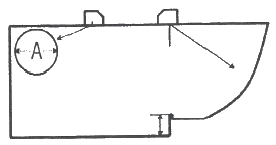
- 30mm
- 40mm
- 50mm
- 60mm
(정답률: 56%)
45. 배관의 길이이음 용접부의 경사각탐상에 대한 설명 중 틀린 것은?
- 탐촉자와 시험체의 접촉조건이 평판 용접부의 검사 때와 다르다.
- 외면으로부터 탐상하는 경우 내면으로의 입사각이 평판의 경우와 다르다.
- 스킵(skip) 거리는 동일한 두께의 판재에 비하여 길어지며, 두께/이경 값이 작을소록 더 커진다.
- 외면으로부터 탐상하는 경우 탐상한계로 두께/외경 값이 크게 될수록 굴절각을 작게 하여야 한다.
(정답률: 45%)
46. 초음파탐상검사 시 CRT 상에 나타나는 에코의 위치는 무엇에 의해 결정되는가?
- 시험체 속의 초음파의 전파시간
- 시험체 속을 통과하는 펄스폭
- 시험체와 탐촉자의 접촉 면적
- 펄스반복 주파수
(정답률: 34%)
47. 초음파탐상시험에 주로 사용하는 탐촉자의 진동자재료는?
- 압전재료
- 도전재료
- 자성재료
- 탄성재료
(정답률: 64%)
48. STB-A1 표준시험편의 100R의 원주의 중심점(입사점을 측정하는 곳)에 폭 0.5mm, 깊이 2mm, 길이 30mm의 노치홈(슬리트)이 있다. 이 노치홈이 없다면 경사각탐촉자를 사용할 때 어떠한 점이 불편하겠는가?
- 입사전 측정이 곤란하다.
- 측정범위의 조정이 곤란하다.
- 굴절각 측정이 곤란하다.
- 분해능 측정이 곤란하다.
(정답률: 25%)
49. 초음파탐상검사 시 사용되는 탐촉자의 공진주파수에 대한 설명으로 옳은 것은?
- 탐촉자의 공진주파수에서 최대의 진동이 일어난다.
- 공진주파수는 종파속도에 반비례한다.
- 공진주파수는 진동자 두께에 비례한다.
- 공진주파수는 진동자 두께의 2배에 비례한다.
(정답률: 24%)
50. 두께가 26mm인 알루미늄판을 전몰수침법으로 탐상하려할 때 알루미늄판의 표면에커와 제1저면에코 사이에 탐상에 방해가 되는 에코가 나타나지 않는 최소 물거리는? (단, 알루미늄에서의 종파속도는 6500m/s이고, 물속에서의 종파속도는 1500m/s 이다.)
- 6mm
- 13mm
- 52mm
- 113mm
(정답률: 32%)
51. 결함의 크기를 평가하는 방법 중 DGS 선도에 관한 설명으로 옳은 것은?
- 결함의 크기를 등가의 원형 평면 결함의 직경으로 나타내는 방법이다.
- 결함의 크기가 초음파 빔의 폭에 비해 충분히 큰 경우에 적용하기 적합하다.
- 시험주파수가 높을수록 결함형상으로부터 영향이 적으므로 고주파수를 적용하는 것이 바람직하다.
- 진동자 크기가 큰 것을 사용하는 것이 바람직하다.
(정답률: 47%)
52. 다음 중 초음파 탐상기의 회로로 가장 거리가 먼 것은?
- 멀티플렉스
- 송신부
- 동기부
- 증폭회로
(정답률: 59%)
53. 송신탐촉자를 사용하여 시험체를 통과시킨 후 반대 쪽에 다른 탐촉자로 초음파를 수신하는 검사 방법은?
- 수직법
- 투과법
- 표면파법
- 경사각법
(정답률: 62%)
54. 다음 중 A-스코프 장비에서 스크린을 더 밝게하려면 무엇을 조정하여야 하는가?
- 진동수
- 펄스의 폭
- 소인지연 조정노브
- 펄스 반복주파수
(정답률: 36%)
55. 탐촉자의 Q값이 크고, 대역폭이 작으며, 펄스폭이 길 때 감도와 분해능의 관계는?
- 감도와 분해능이 커진다.
- 감도는 작아지고 분해능은 커진다.
- 감도는 커지고 분해능은 작아진다.
- 감도와 분해능이 작아진다.
(정답률: 39%)
56. 그림과 같이 용접부를 경사각 탐촉자로 검사하여 결함을 검출하였다. 탐촉자-결함거리 A는 약 얼마인가?
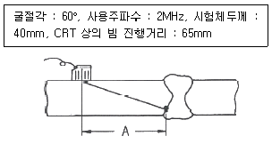
- 30.5mm
- 34.6mm
- 56.3mm
- 60.0mm
(정답률: 43%)
57. 초음파탐상기의 성능과 가장 관련이 없는 것은?
- 근거리 음장
- 증폭의 직선상
- 리젝션(Rejection)
- 분해능(Resolution)
(정답률: 23%)
58. STB-A2 시험편의 평저공이 아닌 것은?
- ø1×1
- ø2×2
- ø3×3
- ø4×4
(정답률: 44%)
59. 경사각탐상에서 2개의 탐촉자를 사용하는 주사방법은?
- 투과주사
- 진자주사
- 지그재그주사
- 목돌림주사
(정답률: 56%)
60. 판두께 19mm의 맞대기 용접부를 실측 굴절각 70° 탐촉자로 경사각탐상을 할 때 Y1.0s(1스킵 거리)는 얼마인가?
- 62.5mm
- 68.5mm
- 104.4mm
- 120.5mm
(정답률: 43%)
4과목: 초음파탐상검사 규격
61. 페라이트계 강 용접부에 대한 초음파탐상검사(KS B 0896)에서 탐상장치 영역구분의 결정을 위한 경사각 탐상 에코높이 구분선 작성의 설명으로 옳은 것은?
- M선은 H선보다 6dB 낮다.
- L선은 M선보다 6dB 높다.
- H선의 높이는 스크린 높이의 50% 이하가 되어서는 안된다.
- 에코높이 구분선의 영역구분은 3개로 한다.
(정답률: 47%)
62. 페라이트계 강 용접부에 대한 초음파탐상검사(KS B 0896)에서 영역구분의 결정 시 인접한 구분선 작성의 감도차는?
- 2dB
- 6dB
- 9dB
- 12dB
(정답률: 45%)
63. 페라이트계 강 용접부에 대한 초음파탐상검사(KS B 0896)에서 경사각 탐촉자의 성능 점검 항목 중 편향각에 대한 점검시기 설명으로 옳은 것은?
- 작업개시 전
- 작업개시 시 및 작업시간 4시간 이내마다
- 작업개시 시 및 작업시간 8시간 이내마다
- 작업 종료 후
(정답률: 23%)
64. 보일러 및 압력용기에 대한 표준초음파탐상검사(ASME Sec.V, Art.23 SA-388)에 따라 교정 시 이득수준의 몇 % 이상 손실이 나타나는 경우 필요한 교정을 재설정 하는가?
- 10%
- 15%
- 20%
- 25%
(정답률: 38%)
65. 탄소강 및 저합금강 단강품의 초음파탐상검사(KS D 0248)에 따른 단강품의 초음파 탐상 검사 시 탐촉자의 스캔속도는 매초 몇 mm 이하 인가?
- 100mm
- 120mm
- 150mm
- 200mm
(정답률: 36%)
66. 보일러 및 압력용기에 대한 초음파탐상검사(ASME Sec.V Art.4)에서 관경 20인치 이하의 곡률을 가진 모든 시험체를 완전히 적용할 수 있게 하려면 곡률이 다른 곡면 대비 시험편은 최소 몇 개를 만들어야 하는가?
- 4개
- 5개
- 6개
- 8개
(정답률: 47%)
67. 보일러 및 압력용기에 대한 초음파탐상검사(ASME Sec.V Art.4)에서 거리진폭 특성곡선을 설정하여 실제검사를 하다가 DAC Curve확인 결과, 감도가 2dB이상 감소되었음을 알았다. 이 경우 취하여야 할 조치로 맞는 것은?
- 그 동안의 검사는 유효하나 거리진폭특성곡선은 수정해야 한다.
- 최종 유효한 교정 점검이후 기록된 검사데이터는 무효로 하고 재검사해야 한다.
- DAC Curve 및 검사결과가 모두 유효하다.
- 기록된 지시에 대해서만 다시 DAC Curve 설정 후 재검사해야 한다.
(정답률: 54%)
68. 알루미늄 판의 맞대기 용접 이음부에 대한 횡파 경사각 빔을 사용한 초음파탐상검사(KS B 0897) 규격을 적용할 수 있는 범위(두께)로 틀린 것은?
- 4mm
- 8mm
- 40mm
- 80mm
(정답률: 25%)
69. 보일러 및 압력용기에 대한 초음파탐상검사(ASME Sec.V Art.4)에서 규정하고 있는 진동자 주사 방향의 일반적인 중첩 정도로 옳은 것은?
- 진동자 체적의 최소 5%
- 진동자 체적의 최소 10%
- 진동자 면적의 최소 5%
- 진동자 면적의 최소 10%
(정답률: 30%)
70. 압력용기용 강판의 초음파탐상 검사방법(KS D 0233)에 의해 탐상할 때 일반적으로 이진동자 수직 탐촉자로 탐상할 수 없는 두께는?
- 25mm
- 45mm
- 55mm
- 65mm
(정답률: 42%)
71. 페라이트계 강 용접부에 대한 초음파탐상검사(KS B 0896)에서 경사각 탐상 결과 에코높이의 범위가 L선 초과 M선 이하일 때 에코높이의 영역은?
- Ⅰ영역
- Ⅱ영역
- Ⅲ영역
- Ⅳ영역
(정답률: 40%)
72. 보일러 및 압력용기에 대한 초음파탐상검사(ASME Sec.V Art.4)에서 노즐 쪽 용접 융합영역을 검사하려고 한다. 이 때 교정 단일구멍의 기준 레벨 에코 높이는?
- 전체 스크린 높이의 60% ± 5%
- 전체 스크린 높이의 60% ± 10%
- 전체 스크린 높이의 80% ± 5%
- 전체 스크린 높이의 80% ± 10%
(정답률: 44%)
73. 알루미늄 판의 맞대기 용접 이음부에 대한 횡파 경사각 빔을 사용한 초음파탐상검사(KS B 0897)에 의한 탐상 방법 및 검사결과의 분류방법에 대한 설명으로 틀린 것은?
- 불연속부를 평가하기 위한 레벨 중 A평가 레벨은 에코 높이의 레벨을 “HRL(기준레벨)-12dB”로 한다.
- 불연속부를 에코 높이의 레벨이 A평가 레벨을 넘는 것은 “C종 흠”으로 판정한다.
- A평가 레벨 이하에서 B평가 레벨을 넘는 것을 “B종”으로 판정한다.
- 장치의 조정은 작업 개시 시 및 그 후 4시간 이내마다 실시한다.
(정답률: 30%)
74. 초음파탐상 시험용 표준시험편(KS B 0831)의 수직 탐촉자로 두꺼운 단조품을 검사할 때 일반적으로 감도조정에 사용하는 표준시험편은?
- G형 표준시험편(STB-G)
- A1형 표준시험편(STB-A1)
- A2형 표준시험편(STB-A2)
- A3형 표준시험편(STB-A3)
(정답률: 40%)
75. 비파괴시험 용어(KS B ⑤50)에서 송신펄스 및 쐐기 안 에코 때문에 탐상할 수 없는 범위를 무엇이라 하는가?
- 분해능
- 불감대
- 대역폭
- 게이트폭
(정답률: 50%)
76. 페라이트계 강 용접부에 대한 초음파탐상검사(KS B 0896)에서 규정한 템덤 탐상이 가능한 두께는?
- 20 mm 이상
- 30 mm 이상
- 40 mm 이상
- 50 mm 이상
(정답률: 44%)
77. 페라이트계 강 용접부에 대한 초음파탐상검사(KS B 0896)에서 용접부에 용접 후 열처리에 대한 지정이 있는 경우 합격여부 판정을 위한 탐성 시기는 언제인가?
- 열처리하기 바로 전
- 최정 열처리한 후
- 기계가공하기 전
- 기계가공 후 열처리하기 바로 전
(정답률: 40%)
78. 보일러 및 압력용기에 대한 초음파탐상검사(ASME Sec.V Art.4)에 따라 용접부에 대한 초음파탐상검사 방법에서 규정한 비 배관(평판형)의 사각빔 교정에 따른 응답균등화선의 범위는?
- 전 스크린 높이의 20~80%
- 전 스크린 높이의 40~80%
- 전 스크린 높이의 30~80%
- 전 스크린 높이의 60~80%
(정답률: 18%)
79. 보일러 및 압력용기에 대한 초음파탐상검사(ASME Sec.V Art.4)에 따라 비 배관(non-piping) 맞대기 용접부의 두께가 75mm일 때 기본 교정 블록에서 감도 설정 홀의 직경은?
- 1.5mm
- 2.5mm
- 3mm
- 5mm
(정답률: 25%)
80. 페라이트계 강 용접부에 대한 초음파탐상검사(KS B 0896)에서 초음파 탐상기 기능의 설정할 게이트 범위(횡파)는?
- 5 ~ 100 mm
- 20 ~ 150 mm
- 50 ~ 200 mm
- 10 ~ 250 mm
(정답률: 11%)